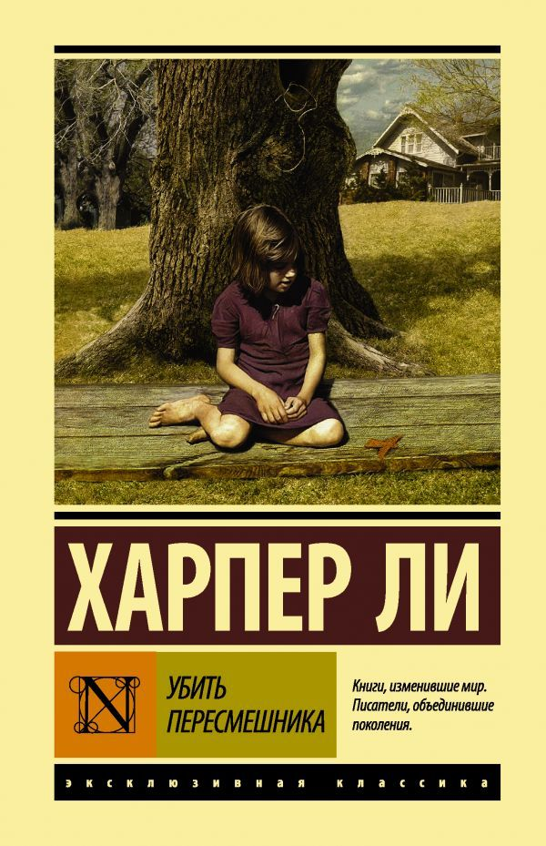

Убить пересмешника
Подробное содержание
Действие происходит в 1930‑е годы в вымышленном городке Мейкомб, штат Алабама. Рассказчица — маленькая девочка по имени Джин-Луиза Финч (Скаут). Она живёт с братом Джимом и отцом, адвокатом Аттикусом Финчем. Их спокойное детство нарушается, когда Аттикус берётся защищать чернокожего мужчину Тома Робинсона, ложно обвинённого в изнасиловании белой женщины.
Несмотря на явные доказательства невиновности Тома, расистское жюри присяжных признаёт его виновным. Том погибает при попытке побега. Параллельно дети пытаются разгадать тайну своего затворника-соседа Страшилы Рэдли, который в решающий момент спасает их от мести обвинителя. Роман заканчивается утверждением нравственных принципов Аттикуса: «убить пересмешника — грех», ведь пересмешник никому не причиняет вреда, а только поёт.
История создания
Харпер Ли написала роман на основе собственных воспоминаний о детстве в штате Алабама. Прототипом Аттикуса Финча послужил её отец, который также был адвокатом. Книга вышла в 1960 году и сразу завоевала Пулитцеровскую премию. Это был единственный роман Ли, опубликованный при её жизни (второй, «Пойди поставь сторожа», вышел много лет спустя). «Убить пересмешника» стал знаковым антирасистским произведением, его изучают в школах по всему миру. Экранизация 1962 года с Грегори Пеком в роли Аттикуса признана классикой.
← Вернуться к списку книг